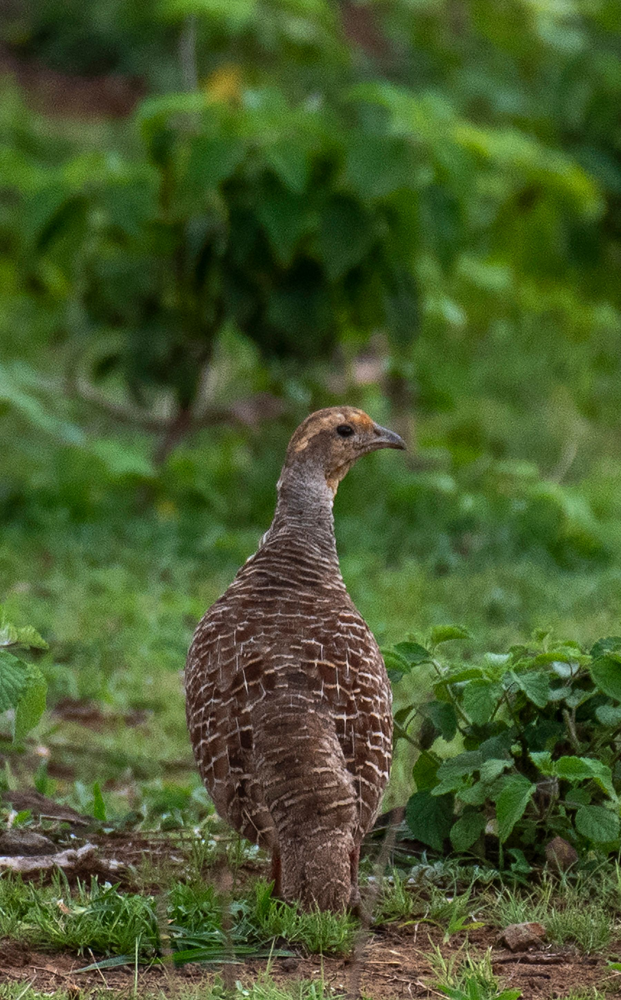

The Grey Francolin is a medium-sized ground-dwelling bird of the pheasant family found mainly in dry and open landscapes across the Indian subcontinent. It has finely barred grey and brown plumage, a reddish-brown face, and a distinctive dark-and-white pattern around the throat and neck. It is commonly seen in grasslands, scrub, agricultural fields, dry woodland, and areas of cultivated land, where it usually walks or runs through vegetation rather than flying for long distances. Compared with the similar Black Francolin, the Grey Francolin is generally paler and more finely patterned, lacking the Black Francolin's striking black-and-white male plumage. Its overall grey-brown coloration provides better camouflage in dry grasslands and scrub than the darker appearance of the Black Francolin. The Grey Francolin also has a more uniformly barred appearance across much of its body, while the Black Francolin shows stronger contrasts and distinctive white markings. Compared with the similar Painted Francolin, the Grey Francolin is less richly coloured and lacks the Painted Francolin's prominent reddish and chestnut patterning. Its preference for relatively dry open habitats also helps distinguish it from francolins that are more strongly associated with wetter grasslands or denser vegetation. Its characteristic loud, repeated calls are often heard from scrub and fields before the bird itself is spotted. These differences in plumage, habitat, behaviour, and vocalisation make the Grey Francolin relatively straightforward to separate from other similar francolins when seen or heard in suitable habitat.